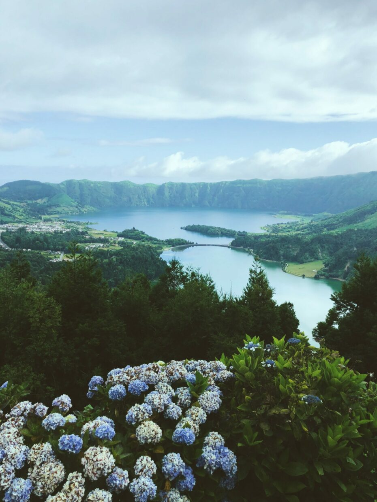

I received my Bachelor's degree in physics from the University of California, Santa Cruz and my Ph.D. in astrophysical sciences from Princeton University. I then moved to University of Wisconsin-Madison where I was a NASA Hubble Postdoctoral Fellow. In Fall 2024, I began a joint tenure-track faculty appointment in the Departments of Physics and Astronomy at the University of Wisconsin-Madison. You can learn more about my science research here.
I grew up on a dairy farm in California. My personal background is rooted in a first-generation college experience, which began at Gavilan Community College. My family migrated from the Povoação and Nordeste municipalities of São Miguel, Azores. A closer look at the history of the Azores, now an autonomous, self-governing region of Portugal, can be explored here.
My hobbies include photography, gardening, kayaking, and amassing an ever-growing collection of books. I’m particularly fond of old astronomy textbooks and popular science books, and I recommend the writings of Cecilia Payne-Gaposchkin and, of course, the legendary Carl Sagan. I’m also loving early-morning weight training at MADabolic Madison and hiking with my two energetic golden retrievers, Murphy and Lilybelle.